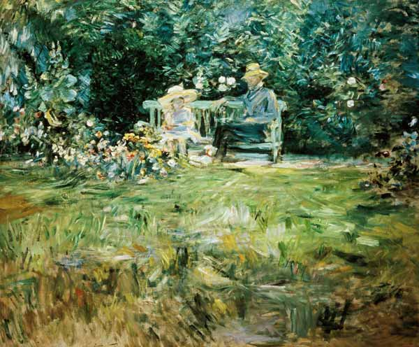
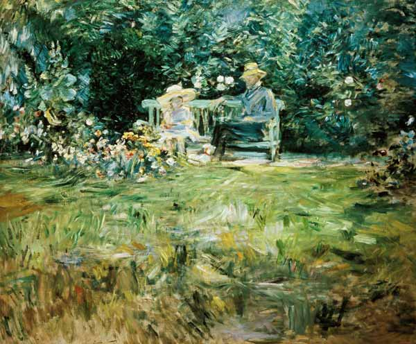

Nymphéas
Claude Monet plasma la delicadeza de los nenúfares en un juego de luz y reflejos.


 



Este espacio está dedicado a recorrer el mundo del Impresionismo, uno de los movimientos artísticos más influyentes de la historia. Vas a encontrar las obras más destacadas, algunos artistas principales y el contexto que transformó la manera de entender el arte.
Nuestro objetivo es acercarte a la mirada impresionista a través de imágenes, citas y recursos interactivos, para que explores y descubras cómo la luz, el color y la sensibilidad cambiaron la pintura para siempre.
Saber más


Conocé a los grandes referentes del Impresionismo, sus estilos únicos y cómo dejaron huella en la historia del arte.
Desde Monet hasta Renoir, cada uno aportó una mirada personal que revolucionó la pintura.
Ver más¡Para recibir informaciones nuevas sobre el movimiento!
Suscribite